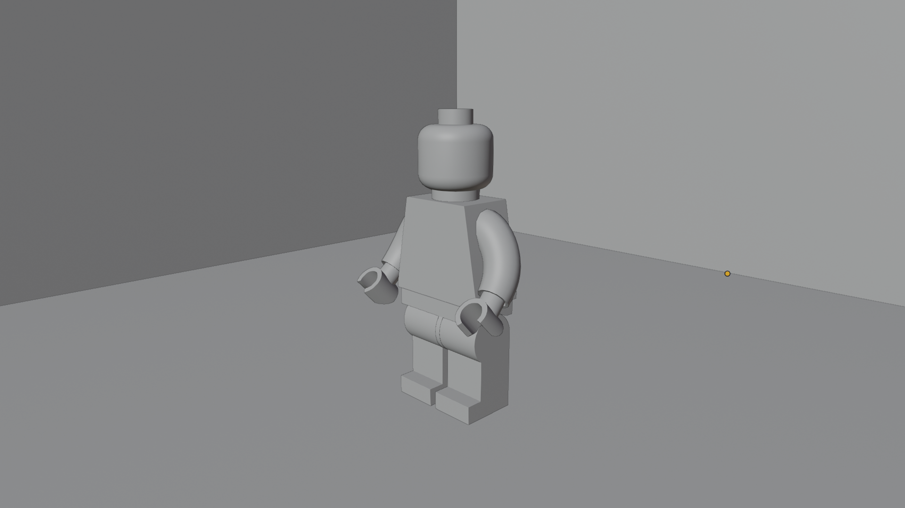
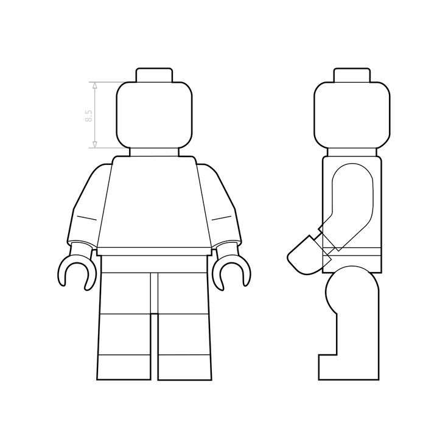
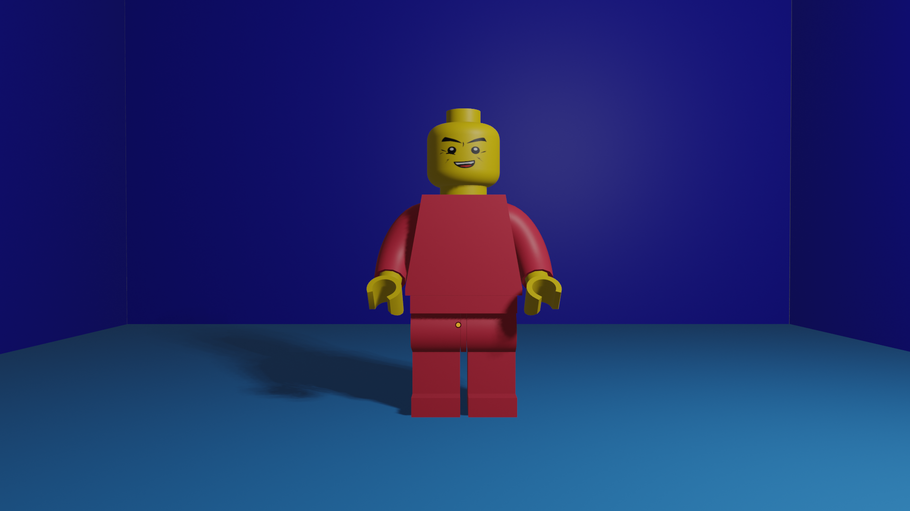
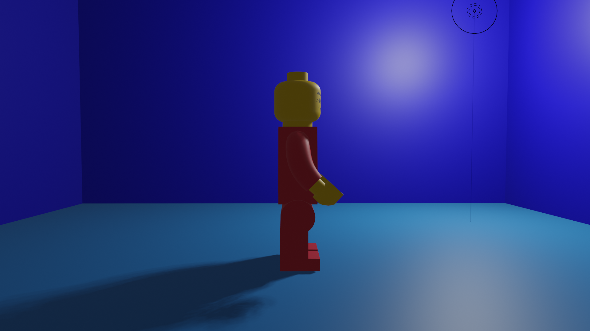
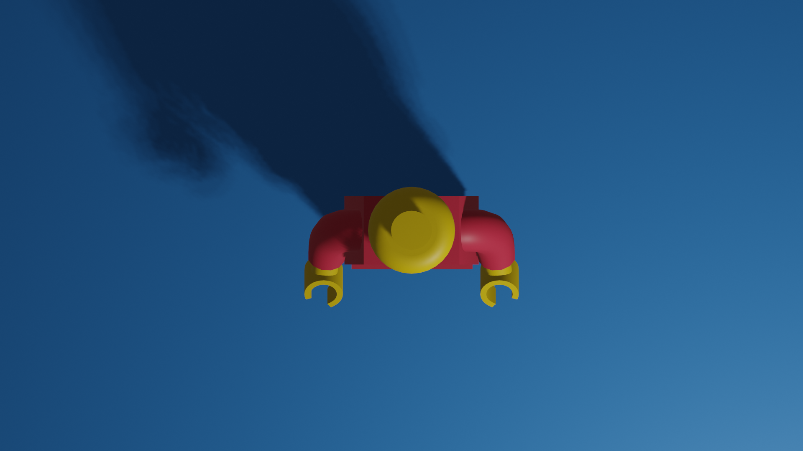

Creating a Lego Minifig in Week 5
Process Photos
Sketch
I found that using a sketch that shows the front and side view greatly helped me lay out my lego man. I could easily regain my reference by hiding him in opacity in the bg and staying true to his dimensions as much as possible.
My Learnings
Blender is very particular. I kept having to understand that I needed to slow down and think. Really think about what exactly I was trying to do...what angle I was at...and break it down over and over again. Not rush into something. The program is smarter than I imagined so I had to get over my assumptions that it was going to be simple to create a shape within it. Just a very exact process. Which in the end I ended up loving.
Renders
I built the lego man by watching a 3 phase tutorial by Dane Sigua. Check it out here! After watching it in half speed about 3 times each for literally every step I had an "aha moment". I just couldn't get used to the angle in which I was trying to build and all the hot key functions. It took a moment.
    